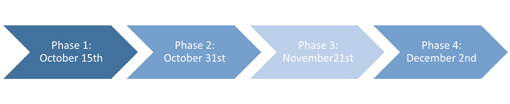
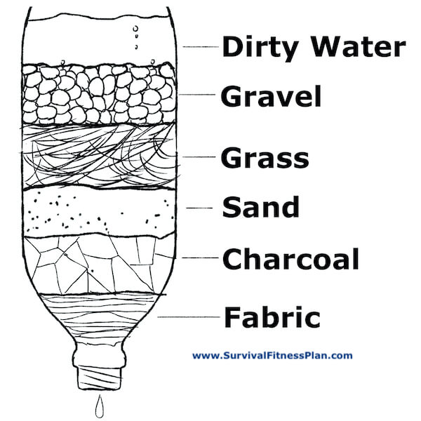

FINAL PROJECT: PLANNING AND IDEATION
<br>
<b>Timeline</b>
<u> Scope of each phase </u>
<div class = "center">

</div>
Phase 1 : create a functional pump
- I will likely 3D print this component
Phase 2: connect filter to pump
Phase 3: Code and design float switch using Arduino
Phase 4: If within scope, create turbidity probe to test water before and after filtration
<b> Bill of materials </b>
Things that I may need to order
- [Float switch](https://www.gadgetronicx.com/interfacing-float-sensor-arduino/)
o I could possibly make one myself but this seems out of the scope of this class and too complicated considering this is one of many components to my final project
- Possible material for water filters:
o Fine sand, charcoal, pebbles, activated carbon
I would like to find something more sophisticated to use like real sawyer filters but again this may be out of the scope of the project
- If I make a turbidity sensor as well:
- Particle photon
- Laser
- LDR
- On/off button
- Small resistor
- Breadboard
- Transparent pvc tube
- Solder tin
- Sealant
- [Source](https://www.instructables.com/How-to-Make-Water-Turbidity-Sensor/)
- Design will be modified but principal mechanism will remain the same
Other materials:
- DC motor
- Wires
- Arduino
<b> Project Plan </b>
<u> Pump </u>
I am planning to 3D print a functional pump. I have not yet decided what type of pump but this week I experimented with 3D printing a centrifugal pump. I believe that I will try to recreate a standard well pump such as this (LINK). My greatest challenge will be to figure out how to make the plastic waterproof. From my research, I believe coating it in Acetone may work but I don’t know if this will contaminate the water and thus defeat the purpose of my project.
<u> Filter </u>
I have not been able to come up with a more sophisticated design for a filter besides one such as the one in the image below (i.e a bio or sand filter). I would like to replicate a professional filter using membranes but I am unclear on how these are produced exactly and if this would be feasibly reproduced.
<div class = "center">

</div>
[This](https://iwaponline.com/ws/article/19/4/1036/63760/Fiber-filter-built-with-polypropylene-fibers)paper suggests making fibers out of polypropylene. I am struggling to find a clear outline how to recreate this however, and it seems that it is not widely used at the moment.
<b> Float switch </b>
I believe that I would need to buy a float switch device (listed above). However, I am hoping that with the Arduino that I can code the specific parameters I want for my float switch (i.e. minimum depth of water for when pump turns off).
<b> Turbidity Monitor </b>
It would be really cool to have a turbidity monitor or probe to check if my filter is really filtering out larger particles. I have only found [this](https://www.instructables.com/How-to-Make-Water-Turbidity-Sensor/) resource so far which details how to make a turbidity monitor. While I may have to order the parts, the assembly seems feasible. I would like to investigate how to make the design more compact, unlike the one shown on the site.
<b> Assembly into compact device </b>
Ideally, I would like all components to be encapsulated in one part, as shown in the drawing below. This may be complicated as I would have to ensure the float switch would not get tangled up around the pump.
<b> Largest Concern </b>
My largest concern at the moment is that a lot of the parts I require cannot be recreated without specific materials. I want my project to involve lots of building and build upon the skills from class but I also would like it to be focused on water systems. I therefore need to try to find a balance between the two.
<h1 font weight=700px>FINAL RESULTS</h1>
<b>Goal</b>
To create a household (i.e. small scale) , cost-effective water system with an emphasis on modularity of components to improve sustainability and user-friendliness. The system is controlled from a phone app via Bluetooth for areas that do not have access to Wi-Fi or cell signal.
<u>Overall view of designs</u>
Individual components labelled
System together (labelled)
<b>Video</b>
<video width ="600" height="1000" controls >
<source src="../FinalProject/final_project.mp4" type="video/mp4" style="float:center"/>
</video>
<b>Overview of each component</b>
<u>Pump</u>
The “Jinhe motor submersible Bilge pump” used for fish-tanks was used in place of the dc pump I constructed that did not work. This pump takes 12 V DC and 0.36 amps and was sufficiently powerful enough for the scope of this project. The pump takes roughly 1 cm diameter tubing. In in order to connect the pump to the PVC (with the tubing placed within) a 3d printed connector was designed. This pump is highly affordable at only 10 dollars.
The corresponding code for the pump is shown below (note that it is connected to a L9110 Bridge Power Driver).
<u>Filter</u>
The filter is modelled of this 5-stage filter, with the main difference being removable compartments. Components were extracted from the purchased filter and mesh was purchased separately. The mesh was secured to the compartments of the filter using a press-fit, additional 3d printed ring. PETG filament was used given its water-safe and waterproof qualities, however additional silicone coating was required to further seal the print.
<u>Water Sensor</u>
The Gilkfun capacitive soil moisture was used in place of capacitive sensors due to less variability and therefore more reliability in water level readings. Additionally the pre-purchased sensor is corrosion resistant allowing for more sustainability. This sensor is also highly cost effective at under 10 dollars.
The corresponding code for the water sensor is shown below:
<u> Bluetooth App</u>
The Bluetooth app was modeled using MIT App inventor which follows block-based coding. I followed tutorials to learn how to call functions and set variables using this type of code and then modified the variables to fit my design. The app currently scans for Bluetooth devices and allows you to select a device to connect to. Once a device is connected to, the pump on and off button appears as well as water level reader. You may toggle between on and off and three different possible outputs will appear for the water level :
1) Low level – turn off pump immediately
2) Medium level
3) High level
<u> Fittings / stand / electrical components </u>
Below are some additional components used to increase modularity. The captions explain their intended use.
INSERT IMAGES
<u> All downloadable components </u>
<a download href='../FinalProject/big_final_drawer_Layla.stl'>Download STL file for large compartment of filter </a>
<a download href='../FinalProject/small_drawer.stl'>Download STL file for smaller compartment of filter </a>
<a download href='../FinalProject/connector_pipetobucket_Layla.stl'>Download STL file for the pipe to bucket connectors</a>
<a download href='../FinalProject/prefabpumptopvc.stl'>Download STL file for the connector for prefab pump to pvc pipe </a>
<a download href='../FinalProject/sensor_to_pvc.stl'>Download my gcode for the attacher for the sensor to the pvc pipe </a>
<a download href='../FinalProject/wire_connector_Layla.stl'>Download my gcode for top component slicing </a>
<a download href='../FinalProject/bucket_stand.dxf'>Download my dxf file for the bucket stand</a>
<a download href='../FinalProject/bluetooth_connection.apk'>Download my code for my bluetooth app</a>
<a download href='../FinalProject/final_project/final_project.ino'>Download my arduino code</a>